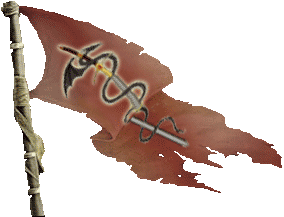
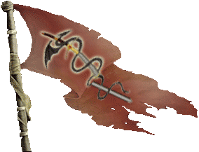

|

|
Das schwarze Brett
|
|
| Übersicht,
Anschläge und Stammtisch (RPG) |
|
Trauer um Meretán
|
Markus Feuernacht
   |
>betritt den Marktplatz und beginnt zu sprechen. Die Stimme ist schwer und man kann die Trauer hören, auch wenn die Stimme nicht bricht<
Scherbe und wieder ist einer gegangen und hat uns Verlassen. Ich kann es nicht glauben das es so gekommen ist aber so ist das Leben voller Überraschungen und nur das Unerwartete kommt immer wieder so zu uns.
Heute muss ich sagen das ein langer Freund von uns gegangen ist. Meretán Exitus hat uns verlassen so sagen es die Wichtel.
Er hat uns einige Zeit als Radio Wichtel einen Einblick in weit von uns Entfernte orte gegeben die wir nicht besuchen konnten da die Scherbe doch räumlich groß ist auch wenn sie immer kleiner wird, da wir immer weniger werden.
Mere ich bete zu den 7. Ich hoffe das dort wo du nun bist eine Welt auf dich wartet die dir gut tut und du dort auch dein Glück findest.
in tiefer Trauer
Markus Feuernacht
>schlägt seine Worte dann noch mals auf einem Pergament geschrieben an<
Weiser Markus Feuernacht,
Vorsteher von Shambhala,
Minister für Wirtschaft und Planung
Zur 11. Stunde am 42.Dunkelfrost im Jahre 452 |
09.11.12 21:58
 |
|
Lyra Callionymus
  |
*stimmt in die Trauer ein*
Oft war ich Meretán Exitus auf Radioveranstaltungen begegnet. Möge er nun auf einer anderen Welt die Lebewesen mit seinen Ideen erfreuen.
*betet zu den 7*
Lady Lyra Callionymus,
Vorsteherin von Atlantis,
Priesterin im Dienste des einzig wahren Glaubens an Bendur,
Anführerin der glorreichen Nation "Freie Walfänger",
Siegerin im Steinekullern 440 und 444
Zur 21. Stunde am 43.Dunkelfrost im Jahre 452 |
10.11.12 6:04
|
|
| Cyrik (RIP) |
Ich glaube die Sklaven die er fing haben sich beim Kampf gegen den Drachen gerächt!
Lyra was sind den Radioveranstaltungen? mir scheint ihr sprecht mit fremden Zungen...
Hohepriester Cyrik,
Vorsteher von Eldorado,
Hohepriester im Dienste des einzig wahren Glaubens an Urvan,
Legionär Urvans
Verkünder des Glaubens an Urvan
Zur 17. Stunde am 45.Dunkelfrost im Jahre 452 |
10.11.12 16:12
|
|
Lyra Callionymus
|
Cyrik das darf ich Euch nicht verraten. Ich habe meine Stadt nicht ohne Grund vor der Aussenwelt verriegelt. Hier haben bereits Dinge stattgefunden, welche ihr Euch in Euren kühnsten Träumen nicht einmal vorstellen würdet.
Wenn ich Euch erzählen würde, das ich Jemand beim Wäsche waschen am Fluß begegnet bin, dann würdet ihr ja auch nicht fragen, was eine Waschveranstaltung ist.
Jedenfalls kannte ich Meretán Exitus unter anderem dadurch, dass ich ihn bei so einer Veranstaltung, von der ihr nichts wisst, mal getempelt habe.
Würde ich diese Veranstaltung nun Kampftunier nennen, dann würdet ihr auch nicht so blöd daherkommen. Ich nenne sie aber Radioveranstaltung. Das ist Wild Cats Island Slang.
Jedenfalls ruhe in Frieden, Meretán Exitus.
Lady Lyra Callionymus,
Vorsteherin von Atlantis,
Priesterin im Dienste des einzig wahren Glaubens an Bendur,
Anführerin der glorreichen Nation "Freie Walfänger",
Siegerin im Steinekullern 440 und 444
Zur 3. Stunde am 46.Dunkelfrost im Jahre 452 |
10.11.12 18:33
|
|
| Cyrik (RIP) |
Also euren Vergleich mit der Waschveranstaltung kann ich nicht nachvollziehen...
Und wenn ich euch blöd daher komme merkt ihr das schon noch, wollt ihr das denn?
Und ihr scheint wirklich aus einer merkwürdigen Gegend zu kommen.
Hohepriester Cyrik,
Vorsteher von Eldorado,
Hohepriester im Dienste des einzig wahren Glaubens an Urvan,
Legionär Urvans
Verkünder des Glaubens an Urvan
Zur 5. Stunde am 46.Dunkelfrost im Jahre 452 |
10.11.12 19:07
|
|
Lyra Callionymus
|
*flüstert*
Ich finde es ein wenig pietätlos auf einer Trauerveranstaltung zu streiten.
Blöd meinte ich nicht negativ. Sicherlich kann es so verstanden werden. Unwissend wäre wohl ein zutreffenderes Wort.
Jedenfalls trauere ich und ich kannte Meretán Exitus halt so und es ist auch schon eine Weile her und von Sklaven oder Drachen haben mir die Bendurwichtel nichts berichtet.
Lady Lyra Callionymus,
Vorsteherin von Atlantis,
Priesterin im Dienste des einzig wahren Glaubens an Bendur,
Anführerin der glorreichen Nation "Freie Walfänger",
Siegerin im Steinekullern 440 und 444
Zur 10. Stunde am 46.Dunkelfrost im Jahre 452 |
10.11.12 20:07
|
|
Markus Feuernacht
|
>seufzt<
Werter Herr Hohepriester, ich habe nichts von Sklaven Handel gehört, aber das kann auch einfach daran liegen das ich da nicht genau suche.
Auch muss ich leider sagen war der Kontakt weniger geworden in den letzten Jahren, aber ich verbiete mit das ihr hier nun darüber streitet wann und wo man sich getroffen hat und wegen anderer Belanglosigkeiten.
Silberritter Markus Feuernacht,
Vorsteher von Shambhala,
Minister für Wirtschaft und Planung
Zur 11. Stunde am 46.Dunkelfrost im Jahre 452 |
10.11.12 20:25
|
|
Galaton Dragus
  |
Also Sklavenhaltung in Magiertürmen und gleichzeitig den Hohepriester, Verkünder und Legionär mimen...naja, das ist schon eine nicht zu verachtende Leistung. Aber das waren bestimmt Absieben-Sklaven, daher legitim...so oder so ähnlich.
Und zu Meretan - damit dürfte Sambi tatsächlich der letzte Überlebende und Erbe der einstigen Kooperative Freier Händler sein! Wie erbarmungslos doch manchmal die Zeit alles auffrißt...*sinnierend wegtrottet*
Graf Galaton Dragus,
Vorsteher von Kristallhafen,
Ehemann der reizenden Tonja Dragus
Zur 13. Stunde am 46.Dunkelfrost im Jahre 452 |
10.11.12 20:52
|
|
| Cyrik (RIP) |
Oh interessant jetzt habe ich schon Sklaven in Magiertürmen... eure Lügen werden auch immer schlechter!
Hohepriester Cyrik,
Vorsteher von Eldorado,
Hohepriester im Dienste des einzig wahren Glaubens an Urvan,
Legionär Urvans
Verkünder des Glaubens an Urvan
Zur 14. Stunde am 46.Dunkelfrost im Jahre 452 |
10.11.12 21:04
|
|
| Chevonne (RIP) |
Ihr solltet euch alle schämen, am Grab eines Toten zu streiten. Grad Ihr, Hohepriester Cyrik, solltet da ein Vorbild sein.
*geht kopfschütteldn und vor sich hinbrummelnd von dannen, nachdem sie dem Toten die letzte Ehre erwiesen hat*
Und so einer darf sich Verkünder schimpfen...unglaublich...
Lady Chevonne,
Vorsteherin von Hafen der Sinne,
Anführerin der glorreichen Nation "Zirkel der Sinne"
Zur 22. Stunde am 46.Dunkelfrost im Jahre 452 |
10.11.12 23:03
|
|
| Aywen (RIP) |
Ihr könnt alle dem Verstorbenen das auf den Weg geben was Ihr wollt. Am Totenbett zu streiten ist ein Frevel. Kommt heute zur großen Zeremonie der Moltage und beschert Meretan einen würdigen Abgang.
Hohepriester Aywen,
Hohepriester im Dienste des einzig wahren Glaubens an Tura
Verkünder des Glaubens an Tura
Zur 13. Stunde am 48.Dunkelfrost im Jahre 452 |
11.11.12 8:13
|
|
Übersicht,
Anschläge und Stammtisch (RPG)
|
|
|
|
Dieser Beitrag
verwendet Regelvariante 3
 |
|
|